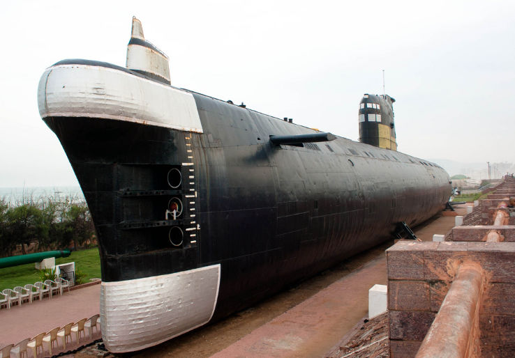

This decommissioned submarine has been turned into a museum right on RK Beach. It's a great place to learn about Indian Naval history and explore the narrow interiors of a real submarine.

Figure 4: The INS Kursura Submarine on display at RK Beach.